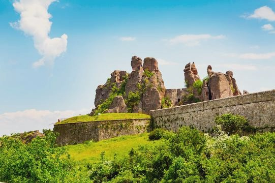
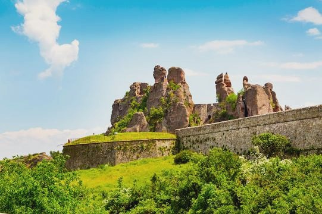

Белоградчишките скали
Опознай родината, за да я обикнеш!
Алеко Константинов


Уникалният природен феномен Белоградчишки скали е скален комплекс с дължина около 30 км и ширина 6-7 км. Комплексът се простира от запад на изток от връх Ведерник (1124 м), около град Белоградчик, до селата Боровица и Белотинци.
В края на Палеозоя, преди около 230 млн.г., в района, където днес се издигат Белоградчишките скали, се наслоили песъчливо-мергелни скали. По-късно те били заляти от море, на дъното на което се отлагали пясък, чакъл и глина. С течение на времето тези материали били свързани от пясъчно-глинеста спойка. Така се получили конгломерати и пясъчници. Червеникавият цвят се дължи на железните окиси и хидроокиси. Като резултат на младоалпийския тектонски цикъл, комплексът се нагънал и се показал на сушата, като районът на Белоградчик попаднал в центъра на една голяма пукнатина. Под влияние на водата, ветровете и колебанията на температурата, варовиците от тези части се разрушили и разкрили силно напуканите конгломерати. Така в продължение на милиони години, природата е изваяла от безформения камък скулптури на митични същества, хора, животни и птици. В пясъчника и варовика се образували и над 100 пещери. Тези скални колони, образуват естествена крепост, чийто отбранителен потенциал е бил експлоатиран от древни времена.
Днес Белоградчишките скали се разпростират на приблизително 30 км. дължина, 3 до 5 км. ширина и до 200 м. височина. Най-величествените скали обграждат Белоградчик: Мадоната, Конникът, Монасите, Ученичката, Лъвът, Мечката, Адам и Ева, Замъкът. От терасата на прочутия р-т „Мислен камък“ може да се наблюдава безкрайната панорама от зъбери, скали, пропасти, тучни поляни и прохладни долчинки с бистри ручеи, а далеч в синевата са спокойните очертания на Стара планина. Флората около скалите включва много ендемити, специфични за Балканите и записани в Червената книга на България. Животинският свят е представен от скален орел, бухал, малък лешояд, черен щъркел, вълк, глиган, благороден елен, сърна, сънливец и други.
Скалните творби са разнообразни по форма и големин, издигащи се на повече от 100 м височина.
Първата група от скални фигури е разположена около град Белоградчик. Имената на по-известните от тях са Конника, Мадоната, Дервиша, Адам и Ева, Гъбите, Лъва, Монасите, Мечката, Замъка, Овчарчето.
Друга група скали е разположена западно от града. Най-известните от тях са Збеговете, Еркюприя и Борич. До тези скали се достига по добре очертан път, подходящ за превозни средства. Наред с огромните насечени скали, тук могат да бъдат видени и дълбоки пропасти. Най-интересни са каменните композиции – Близнаците, Малък и Голям Збег, където е имало крепостни твърдини. Скалите са били използвани като естествена защита от византийци, българи и османци през различни епохи. На много места се забелязват и останки от постройки, зидове, парчета от тухли, фрагменти от керамика.
Около Збеговете и Борич има скали с най-причудливи форми, наподобяващи гигантски сфинксове, глави на маймуни, мумии, минарета и кубета на джамии, крилати змейове и др. На около 4 км източно от града се намира трета група, която обхваща скалите около Латинското кале и Лепенишката пещера.
Четвъртата група се простира между селата Боровица и Фалковец. Там са разположени известните скали наречени: Боров камък, Пчелин камък, Торлак, Момина скала.
Последната група скали е разположена около селата Гюргич и Белотинци
Работно време: 9:00 – 17:00 часа
 
